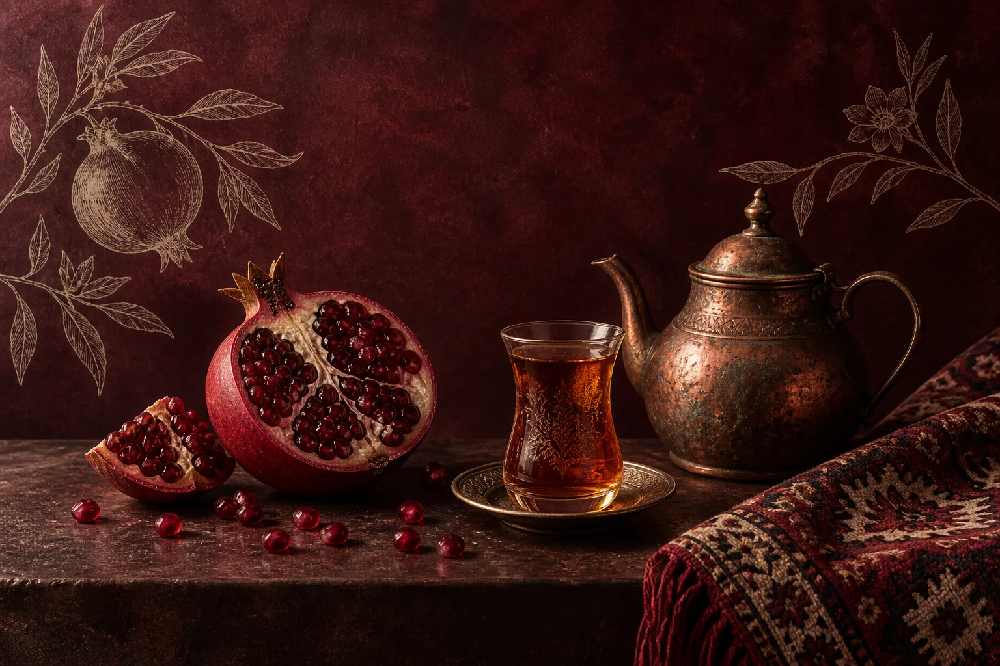

АЗЕРБАЙДЖАНСКАЯ И ЕВРОПЕЙСКАЯ КУХНЯ
ASTORIA
Встречи со вкусом.
Поводы от души.

Ваш повод.
Ваше меню.
Семейная дата, юбилей или встреча большой компанией. Обсудите формат праздника с «Асторией».
Банкетное меню составляется с учётом ваших предпочтений. Уточните полный состав, стоимость и условия заранее.
Рассказать о вашем событии ↗Каким будет ваш вечер?
- Назовите дату и число гостей.
- Расскажите о вкусах и пожеланиях.
- Согласуйте меню и полную стоимость.
МЕНЮ ПОД ВАШ ПОВОД
Обсудим
ваш праздник.
Назовите дату, число гостей и предпочтения. Администратор сможет предметно обсудить с вами банкетное меню.
Если уже определились с бюджетом, укажите его в пожеланиях. Итоговую стоимость и состав меню подтвердите с рестораном перед бронированием.
Пожелания к вашему вечеру
РЕСТОРАН «АСТОРИЯ»
Встретимся
в Елабуге.
Улица Максима Горького, 107А
+7 917 870-21-00Часы работы и свободные столики уточните у администратора.
КАК ДОБРАТЬСЯ
Ваш стол — в Астории
Елабуга, улица Максима Горького, 107А
Если карта не загрузилась, откройте маршрут по ссылке выше.